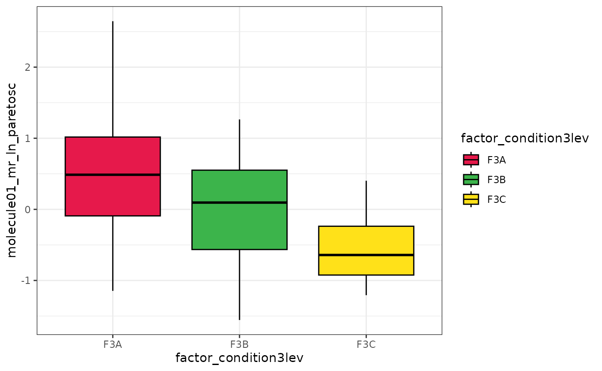

Vignette of the GetFeatistics package
Gianfranco Frigerio
2024-07-22
GF_vignette.Rmd
Introduction
The GetFeatistics (GF) package provides several functions useful for the elaboration of metabolomics data. In this vignette you can find an example of a workflow using the functions of this package.
Installation
You haven’t installed the package yet?! Let’s amend for that just by running the following code. Just be prepared that it might take some time if you update all the dependencies.
if (!require("devtools", quietly = TRUE)) {
install.packages("devtools")
}
devtools::install_github("FrigerioGianfranco/GetFeatistics", dependencies = TRUE)I hope everything went well! If you had any issue, please contact me. After some testing, I noted that there might be an error during the installation if you don’t have Java (please install it before!) and if your version of Java (32 bit or 64 bit) doesn’t match the version of R (please, check that if the installation doesn’t work!).
Loading the package
The following line will load the package and all its dependencies in your current working environment. Let’s start the fun!
Create mock data
In this vignette, we will use some mock data that simulate targeted and untargeted metabolomics experiments.
create_df_examples()
#>
#> In the Global Environment, created the object df_example_generic
#> In the Global Environment, created the object df_example_targeted
#> In the Global Environment, created the object df_example_targeted_legend
#> In the Global Environment, created the object df_example_targeted_compounds_legend
#> In the Global Environment, created the object df_example_sample_data
#> In the Global Environment, created the object df_example_feat_intensities
#> In the Global Environment, created the object df_example_feat_info
#> In the Global Environment, created the object df_example_qc_sampletype
#> In the Global Environment, created the object df_example_melecules_to_search
#> In the Global Environment, created the object df_example_gradientThe vignette is composed of three main chapters: targeted analyses, non-targeted analyses, and statistical analyses.
Targeted analyses
To elaborate a targeted analyses, we need to organise the data in at least two tables:
- The first should contain the intensities of peak area. Samples in rows, analysed compounds in columns. Hopefully you can export this table from your chromatographic vendor software. Here we will be using the df_example_targeted:
df_example_targeted
#> # A tibble: 83 × 7
#> samples molecule01 molecule01_IS molecule02 molecule02_IS molecule03
#> <chr> <dbl> <dbl> <dbl> <dbl> <dbl>
#> 1 blank 0 85009210. 0 512295. 2
#> 2 blank 12 85058549. 12 513398. 474
#> 3 blank 45 85544475. 45 512771. 2
#> 4 calibration_cur… 862 84525132. 64851 512250. 184514
#> 5 calibration_cur… 916839 83570564. 69002371 513334. 3926523
#> 6 calibration_cur… 2437097 84157195. 122279121 510583. 13916386
#> 7 calibration_cur… 8664951 84662094. 217377977 513191. 51540480
#> 8 calibration_cur… 10163671 85495504. 254976452 514245. 90682659
#> 9 calibration_cur… 13164865 84600992. 402513548 512262. 132142516
#> 10 calibration_cur… 16546462 85375590. 622652692 513297. 177157699
#> # ℹ 73 more rows
#> # ℹ 1 more variable: molecule04 <dbl>- We need to prepare a second table in which:
- the first column must be identical to the first column of the first table;
- the second column should contain the following: “blank”, “curve”, “qc”, or “unknown”.
- the third column should have the actual known values for “curve” and “qc” samples.
Not clear? Have a taste of the df_example_targeted_legend:
df_example_targeted_legend
#> # A tibble: 83 × 6
#> samples sample_type molecule01 molecule02 molecule03 molecule04
#> <chr> <chr> <dbl> <dbl> <dbl> <dbl>
#> 1 blank blank NA NA NA NA
#> 2 blank blank NA NA NA NA
#> 3 blank blank NA NA NA NA
#> 4 calibration_curve_le… curve 0 0 0 0
#> 5 calibration_curve_le… curve 10 100 2 10
#> 6 calibration_curve_le… curve 30 200 8 30
#> 7 calibration_curve_le… curve 90 300 25 90
#> 8 calibration_curve_le… curve 120 400 50 120
#> 9 calibration_curve_le… curve 160 650 75 160
#> 10 calibration_curve_le… curve 200 1000 100 200
#> # ℹ 73 more rows- Did I say “at least” two tables, remember? Well, even though it’s not mandatory, preparing a third table is useful especially if you work with internal standards. This data frame should contain four columns:
- in the first column, the name of the targeted molecules;
- in the second column, the matched internal standard (or NA if there isn’t an internal standard for that molecule);
- in the third column, the weighting factor you want for the calibration curve for that molecule. I highly recommend to use a weighting factor such as 1/X, 1/Y, or 1/(Y^2) for a better accuracy of low concentrated analytes, but if you still don’t want, you can put “none” or NA;
- in the fourth column, the unit of measure of the known concentration (this is only for visualizations and it’s not considered for any calculation)
Yes, everything as in the df_example_targeted_compounds_legend:
df_example_targeted_compounds_legend
#> # A tibble: 4 × 4
#> compounds matched_IS weighting unit
#> <chr> <chr> <chr> <chr>
#> 1 molecule01 molecule01_IS 1/Y ng/mL
#> 2 molecule02 molecule02_IS none ug/mL
#> 3 molecule03 NA 1/(Y^2) ng/mL
#> 4 molecule04 NA NA NANow that we have all the tables, we just need to pass them as the three arguments of the get_targeted_elaboration function!
TARGETED_EXAMPLE_RESULTS <- get_targeted_elaboration(data_intensity = df_example_targeted,
data_legend = df_example_targeted_legend,
compound_legend = df_example_targeted_compounds_legend)The output of the function is a list with 5 useful things:
- results_concentrations: a table with the calculated concentrations (you will need only this for the following statistical analyses)
- results_accuracy: a table with the calculated accuracy (%) for curve points and qc. It’s good to check that most of these values are between 80% and 120%!
- cv_internal_standards: the relative standard deviation (%) of the intensities of internal standards.
- compound_legend: it’s the same table provided in the third argument. I thought it was good to keep this valuable information!
- summary_regression_models: stuff of the fitted linear regression models such as: slope, intercept, r squared, and adjusted r squared.
- regression_models: a list with the all the fitted regression models.
Amazing! Let’s check for example how the results_concentrations table looks like:
TARGETED_EXAMPLE_RESULTS$results_concentrations
#> # A tibble: 83 × 6
#> samples sample_type molecule01 molecule02 molecule03 molecule04
#> <chr> <chr> <dbl> <dbl> <dbl> <dbl>
#> 1 blank_1 blank -0.0209 -9.32 -0.0993 -2.19
#> 2 blank_2 blank -0.0207 -9.32 -0.0990 -2.18
#> 3 blank_3 blank -0.0204 -9.32 -0.0993 -2.19
#> 4 calibration_curve_le… curve -0.0105 -9.22 0.00449 -2.08
#> 5 calibration_curve_le… curve 11.2 103. 2.11 9.09
#> 6 calibration_curve_le… curve 29.6 191. 7.73 27.8
#> 7 calibration_curve_le… curve 105. 346. 28.9 104.
#> 8 calibration_curve_le… curve 121. 406. 50.9 123.
#> 9 calibration_curve_le… curve 159. 649. 74.2 160.
#> 10 calibration_curve_le… curve 198. 1007. 99.6 201.
#> # ℹ 73 more rowsOr maybe we want to see if the coefficient of determination is good enough, that numeric value is reported in the summary_regression_models table:
TARGETED_EXAMPLE_RESULTS$summary_regression_models
#> # A tibble: 4 × 5
#> parameter molecule01 molecule02 molecule03 molecule04
#> <chr> <dbl> <dbl> <dbl> <dbl>
#> 1 slope 0.000979 1.19 1777751. 5140.
#> 2 intercept 0.0000204 11.1 176526. 11237.
#> 3 r.squared 0.996 0.994 0.995 0.992
#> 4 adj.r.squared 0.995 0.994 0.994 0.992Well, they are calibration curves, right? So, better visualise them! Let’s use the function plot_calibration_curves. It will create a list of ggplots that you can either print on R or export using the export_figures function.
TARGETED_EXAMPLE_CALIBRATION_CURVES <- plot_calibration_curves(targeted_elaboration = TARGETED_EXAMPLE_RESULTS)
TARGETED_EXAMPLE_CALIBRATION_CURVES$molecule01
#> `geom_smooth()` using formula = 'y ~ x'
export_figures(TARGETED_EXAMPLE_CALIBRATION_CURVES, "TARGETED_EXAMPLE_CALIBRATION_CURVES", exprt_fig_type = "pdf")Last step before moving to the next chapter: let’s store separately just what we will need later for the statistics. Two easy steps.
- Collect the data frame of results of unknown samples in an object:
TARGETED_RESULTS_FOR_STATISTICS <- filter(TARGETED_EXAMPLE_RESULTS$results_concentrations, sample_type == "unknown")- Collect the name of the variables in another distinct object:
TARGETED_MOLECULES <- TARGETED_EXAMPLE_RESULTS$compound_legend$compoundsNon-targeted analyses
This package is supposed to be used after obtaining a feature table using open source tools such as XCMS and MS-Dial. In particular, we need a table of feature intensities like this:
df_example_feat_intensities
#> # A tibble: 9 × 78
#> featname QCpooled_tot01 QCpooled_tot02 blank_untargeted01 QCpooled_tot03
#> <chr> <dbl> <dbl> <dbl> <dbl>
#> 1 feature001 74181229 42824388 720501 657266255
#> 2 feature002 118220210 115639566 8321 106082721
#> 3 feature003 110622819 127316421 NA 137718462
#> 4 feature004 2294835 2492735 42 2504627
#> 5 feature005 153153 116759 NA 196216
#> 6 feature006 NA 202824643 20093295 446030
#> 7 feature007 139350 80736 NA 71090
#> 8 feature008 30986875 12910756 13343 754989
#> 9 feature009 20555071 21102214 23060 NA
#> # ℹ 73 more variables: QCpooled_F3A01 <dbl>, QCpooled_F3B01 <dbl>,
#> # QCpooled_F3C01 <dbl>, unkwon_sample_001 <dbl>, unkwon_sample_002 <dbl>,
#> # unkwon_sample_003 <dbl>, unkwon_sample_004 <dbl>, unkwon_sample_005 <dbl>,
#> # unkwon_sample_006 <dbl>, unkwon_sample_007 <dbl>, unkwon_sample_008 <dbl>,
#> # unkwon_sample_009 <dbl>, unkwon_sample_010 <dbl>, QCpooled_tot04 <dbl>,
#> # QCpooled_F3A02 <dbl>, QCpooled_F3B02 <dbl>, QCpooled_F3C02 <dbl>,
#> # unkwon_sample_011 <dbl>, unkwon_sample_012 <dbl>, …and a featINFO table, whose first column must be identical to the first column of the feature intensity table, and the other are retention times, m/z, and any other valuable information related to that feature, such as this one:
df_example_feat_info
#> # A tibble: 9 × 3
#> featname rt mz
#> <chr> <dbl> <dbl>
#> 1 feature001 242 120.
#> 2 feature002 288 146.
#> 3 feature003 408 203.
#> 4 feature004 528 148.
#> 5 feature005 465 164.
#> 6 feature006 476 164.
#> 7 feature007 342 204.
#> 8 feature008 221 104.
#> 9 feature009 593 425.If you worked with MS-dial, you just need to export the areas or the normalized areas, upload the .txt table on R using a function like read_tsv() and then pass it to the functions get_feat_table_from_MSDial and get_feat_info_from_MSDial. For example, something like that:
POTENTIAL_FEAT_TABLE <- get_feat_table_from_MSDial(read_tsv("_NAME_OF_THE_EXPORTED_MSDIAL_FILE_.txt"))
POTENTIAL_FEAT_INFO <- get_feat_info_from_MSDial(read_tsv("_NAME_OF_THE_EXPORTED_MSDIAL_FILE_.txt")) %>% get_AnnoLevels_MSDial()If you used XCMS while working within patRoon (and if you didn’t, I suggest you to do it next time as patRoon is a great “docking station” tool that feature several widely used R-based algorithms, such as metFrag for example, check it out: https://github.com/rickhelmus/patRoon) you can use the functions get_feat_table_from_patRoon and get_feat_info_from_patRoon. Below some examples:
POTENTIAL_FEAT_TABLE <- get_feat_table_from_patRoon(patRoon_featureGroups = _PUT_HERE_THE_featureGroups_TABLE_FROM_patRoon_)
POTENTIAL_FEAT_INFO <- get_feat_info_from_patRoon(patRoon_featureGroups = _PUT_HERE_THE_featureGroups_TABLE_FROM_patRoon_,
patRoon_MFsummary = NULL,
MFsummary_score_columns = c("individualMoNAScore", "score"),
add_AnnoLevels = TRUE)Great. The previous two chunks are not actually run, as in this vignette we will be using the mock df_examples. Speaking of which, let’s look at a table that is necessary for the next step of this workflow: the filtration of features following some defined cut-offs considereing pooled QC.
- The first column are the samples,
- the second column should contain “REMOVE” (to not consider at all those samples, I suggest to do so for the first analyses of each batch), “blank”, “QC”, “QC_half” (if you prepared some 50:50 dilution of pooled QC samples) or “unknown”.
- The third should be prepared only separated pooled QCs were prepared. If you want more information of such an approach, please check the idea behind it by reading this paper: https://doi.org/10.3390/molecules27082580.
df_example_qc_sampletype
#> # A tibble: 77 × 3
#> samples action qc_group
#> <chr> <chr> <chr>
#> 1 QCpooled_tot01 REMOVE NA
#> 2 QCpooled_tot02 REMOVE NA
#> 3 blank_untargeted01 blank NA
#> 4 QCpooled_tot03 QC tot
#> 5 QCpooled_F3A01 QC F3A
#> 6 QCpooled_F3B01 QC F3B
#> 7 QCpooled_F3C01 QC F3C
#> 8 unkwon_sample_001 unknown NA
#> 9 unkwon_sample_002 unknown NA
#> 10 unkwon_sample_003 unknown NA
#> # ℹ 67 more rowsThis table, together with the table of feature intensities, is all you need to run the QCs_process function, which will filter out from your table the features that will not meet the cut-offs:
- step1: if TRUE, features with a relative standard deviation (CV%) greater than the value defined in the step1_cutoff will be filtered out.
- step2: if TRUE, features not present in at least a percentage of QC samples as defined in step2_cutoff will be filtered out.
- step3: if TRUE, features with a blank contribution, i.e.: the ratio between mean of blank and mean of QC, greater than the value defined in the step3_cutoff will be filtered out.
- step4: if TRUE, features whose mean in “QC_half” samples are not between the percentage range of two values defined in step4_cutoff compared to the mean of QCs will be filtered out.
- Moreover, if sep_QC is TRUE, those steps will be performed separately in each QC groups, and then features that are confirmed in at least one of the groups defined in QC_to_merge will be kept.
UNTARGETED_FEAT_TABLE_QC_FILTERED <- QCs_process(featmatrix = df_example_feat_intensities,
sampletype = df_example_qc_sampletype,
sep_QC = TRUE,
QC_to_merge = c("tot", "F3A", "F3B", "F3C"),
step1 = TRUE,
step1_cutoff = 50,
step2 = TRUE,
step2_cutoff = 50,
step3 = TRUE,
step3_cutoff = 50,
step4 = FALSE,
step4_cutoff = c(20, 80),
rtrn_filtered_table = TRUE,
remove_results = TRUE,
remove_QC_and_blanks = TRUE)
#> After the QC processing, for tot the feature table was reduced from 9 to 5 fetures
#> After the QC processing, for F3A the feature table was reduced from 9 to 2 fetures
#> After the QC processing, for F3B the feature table was reduced from 9 to 3 fetures
#> After the QC processing, for F3C the feature table was reduced from 9 to 3 fetures
#> Furthermore, while considering the feature matrix combined of tot F3A F3B F3C the final table contained 6 featuresI’d suggest also to filter the featINFO table accordingly, you could run something like this:
UNTARGETED_FEAT_INFO_QC_FILTERED <- filter(df_example_feat_info,
featname %in% UNTARGETED_FEAT_TABLE_QC_FILTERED$featname)Brilliant. Last step of this chapter is to prepare what we need for the following statistical elaborations. Statistically speaking, considering the samples as observations (so as rows) and the features as variables (so as columns) is better for statistics. Luckily, I prepared a function that transpose our current feature table:
UNTARGETED_RESULTS_FOR_STATISTICS <- transpose_feat_table(UNTARGETED_FEAT_TABLE_QC_FILTERED)Finally, we also need to collect the feature names in a character vector object:
FEATURES_CONSIDERED <- colnames(UNTARGETED_RESULTS_FOR_STATISTICS)[-1]Statistical analysis
Not bad so far. Before actually start off with the statistics, let’s put together the data from targeted and untargeted analyses in a single dataframe, together also with some other variables relevant for your samples (for example in an epidemiologic study, we could have patient data such as age, BMI, sex, and more). In this vignette we will use mock data from the df_example_sample_data which contains three categoriacal variables and two numerical variables.
EXAMPLE_TABLE_FOR_STATISTICAL_ANALYSES <- df_example_sample_data %>%
left_join(TARGETED_RESULTS_FOR_STATISTICS, by = "samples") %>%
left_join(UNTARGETED_RESULTS_FOR_STATISTICS, by = "samples")Moreover, let’s put together the character vectors of the known molecule variables from the targeted analyses with the character vector of the feature names.
ALL_POTENTIAL_COMPOUNDS <- c(TARGETED_MOLECULES, FEATURES_CONSIDERED)Obviously, if you have only targeted or only untargeted experiments, and if you don’t have any other data to join, you can skip this preparatory step and go directly on with the statistics.
Descriptive statistics
Have you ever wished of a table that gives you quick summary of the data with mean or median, and/or with percentiles? Maybe also with the option of doing it separately for each group of a defined categorical variables (that could be for example the control/disease groups)? Your dream will come true with the gentab_descr function! Just put the dataframe in the first argument, the character vector with the name of all the numerical variables of interest in the second argument, the name of the factor variable in the third argument. You specify what you want in the type argument, for example “median (5th; 95th percentile)”. Check the full documentation by tying ?gentab_descr to know the other options such as setting a defined number of digital places, or how to consider missing values.
EXAMPLE_DESCRIPTIVE_STATISTICS_RESULTS <- gentab_descr(df = EXAMPLE_TABLE_FOR_STATISTICAL_ANALYSES,
v = ALL_POTENTIAL_COMPOUNDS,
f = "factor_condition3lev",
type = "median (5th; 95th percentile)",
ROUND = TRUE,
dig = 3,
unit_mes = NA,
missing = "only if >0")Don’t forget to export it as an external table with the export_the_table function and it will be ready to be used as a table of your next publication!
export_the_table(EXAMPLE_DESCRIPTIVE_STATISTICS_RESULTS, "EXAMPLE_DESCRIPTIVE_STATISTICS_RESULTS", "txt")Data normalisation
Before moving to parametric inferential statistics, we should check if the data are normally distributed. We could do it in three different ways:
- We could plot a density plot and check if the data distribution resembles a Gaussian:
DENSITY_PLOTS <- test_normality_density_plot(df = EXAMPLE_TABLE_FOR_STATISTICAL_ANALYSES, v = ALL_POTENTIAL_COMPOUNDS)
DENSITY_PLOTS[[1]]- We could plot a Q–Q plot, anchd check that all points are within the grey area of the graph:
QQPLOT <- test_normality_q_q_plot(df = EXAMPLE_TABLE_FOR_STATISTICAL_ANALYSES, v = ALL_POTENTIAL_COMPOUNDS)
QQPLOT[[1]]- We could apply Shapiro–Wilk tests: if the P-value is less than a defined cut-off (classical 0.05) means that data are not normally distributed:
SHAPIRO_TABLE <- test_normality_Shapiro_table(df = EXAMPLE_TABLE_FOR_STATISTICAL_ANALYSES, v = ALL_POTENTIAL_COMPOUNDS, pvalcutoff = 0.05, cutpval = FALSE)
SHAPIRO_TABLE
#> # A tibble: 10 × 4
#> variable shap_test_result shap_test_pvalue normally_distributed
#> <chr> <dbl> <dbl> <lgl>
#> 1 molecule01 0.602 1.26e-10 FALSE
#> 2 molecule02 0.863 2.64e- 5 FALSE
#> 3 molecule03 0.880 8.18e- 5 FALSE
#> 4 molecule04 0.897 2.84e- 4 FALSE
#> 5 feature002 0.775 1.62e- 7 FALSE
#> 6 feature003 0.698 4.86e- 9 FALSE
#> 7 feature004 0.636 4.26e-10 FALSE
#> 8 feature005 0.802 6.50e- 7 FALSE
#> 9 feature007 0.850 1.12e- 5 FALSE
#> 10 feature009 0.945 2.42e- 2 FALSEMost of the time, we need to normalise metabolomics data. We can do it in one step with the transf_data function. Here a little guide to how to prepare the arguments:
- As most of the statistical function of the package, put the data frame of interest, and a character vector with the name of the numerical columns of interest in the first two arguments
- If missing_replace is TRUE, each NA in the data will be replaced by the minimum value of that variable, after being processed by an operation (“divide”, “multiply”, or “exponentiate”) passed to missing_repl_type and the value in missing_repl_value. For example, if you want to replace the missing values with 1/5 of the minimum value, set missing_repl_type = “divide” and missing_repl_value = 5. If you want to replace missing values with the squared root of the minimum value, set missing_repl_type = “exponentiate” and missing_repl_value = 1/2.
- If log_transf is TRUE, the data will be log-transformed and the base of the logarithm is the value reported in log_base (choose exp(1) is for the natural logarithm).
- If scaling is TRUE, data will be scaled considering what is
reported in scaling_type, in particualr:
- “mean_scale”: data are subtracted by the mean;
- “auto_scale”: data are subtracted by the mean and divided by the standard deviation;
- “pareto_scale”: data are subtracted by the mean and divided by the squared root of the standard deviation;
- “range_scale”: data are subtracted by the mean and divided by the difference between the maximum and the minimum values.
- The output will be a table with more columns containing the transformed values, to automatically get the names of those columns in separate objects saved in the global environment, you can specify vect_names_transf as TRUE and the starting part of the name that object in name_vect_names
Hopefully running the example will make things clear:
EXAMPLE_TABLE_FOR_STATISTICAL_ANALYSES_transf <- transf_data(df = EXAMPLE_TABLE_FOR_STATISTICAL_ANALYSES,
v = ALL_POTENTIAL_COMPOUNDS,
missing_replace = TRUE,
missing_repl_type = "divide",
missing_repl_value = 5,
log_transf = TRUE,
log_base = exp(1),
scaling = TRUE,
scaling_type = "pareto_scale",
vect_names_transf = TRUE,
name_vect_names = "ALL_POTENTIAL_COMPOUNDS_transf")Look at the column names of the object: “_mr” has been added for missing value replaced, “_ln” for the log-transformation, and “paretosc” for the pareto scaling:
glimpse(EXAMPLE_TABLE_FOR_STATISTICAL_ANALYSES_transf)
#> Rows: 52
#> Columns: 47
#> $ samples <chr> "unkwon_sample_001", "unkwon_sample_002", "u…
#> $ factor_condition2lev <fct> F2A, F2A, F2A, F2A, F2A, F2A, F2A, F2A, F2A,…
#> $ factor_condition3lev <fct> F3A, F3A, F3A, F3A, F3A, F3A, F3A, F3A, F3A,…
#> $ factor_condition4lev <fct> F4A, F4A, F4A, F4A, F4A, F4A, F4A, F4A, F4A,…
#> $ numerical_condition_a <dbl> 4144.84, 2730.27, 1830.29, 3890.55, 1894.76,…
#> $ numerical_condition_b <dbl> 4.9, 4.0, 5.9, 6.1, 14.8, 27.1, 23.0, 23.8, …
#> $ sample_type <chr> "unknown", "unknown", "unknown", "unknown", …
#> $ molecule01 <dbl> 64.01434, 35.47336, 163.16339, 172.53414, 90…
#> $ molecule02 <dbl> 71.660272, 45.573955, 30.358801, 72.010810, …
#> $ molecule03 <dbl> 0.036142724, 0.437926820, 0.290853901, 0.014…
#> $ molecule04 <dbl> 78.6898920, 52.6804134, 37.6598743, 79.10643…
#> $ feature002 <dbl> 1041717, 1838405, 1833003, 2283669, 2295150,…
#> $ feature003 <dbl> 123288, 178957, 147968, 136045, 156292, 1620…
#> $ feature004 <dbl> 9409, 7624, 8385, 7474, 8628, 8940, 7626, 85…
#> $ feature005 <dbl> 115952, 104632, 106887, 241976, 43063, 15679…
#> $ feature007 <dbl> 43897, 36940, 185687, 134781, 39105, 228596,…
#> $ feature009 <dbl> 27104212, 39761464, 25144541, 32142174, 2883…
#> $ molecule01_mr <dbl> 64.01434, 35.47336, 163.16339, 172.53414, 90…
#> $ molecule02_mr <dbl> 71.660272, 45.573955, 30.358801, 72.010810, …
#> $ molecule03_mr <dbl> 0.036142724, 0.437926820, 0.290853901, 0.014…
#> $ molecule04_mr <dbl> 78.6898920, 52.6804134, 37.6598743, 79.10643…
#> $ feature002_mr <dbl> 1041717, 1838405, 1833003, 2283669, 2295150,…
#> $ feature003_mr <dbl> 123288, 178957, 147968, 136045, 156292, 1620…
#> $ feature004_mr <dbl> 9409, 7624, 8385, 7474, 8628, 8940, 7626, 85…
#> $ feature005_mr <dbl> 115952, 104632, 106887, 241976, 43063, 15679…
#> $ feature007_mr <dbl> 43897, 36940, 185687, 134781, 39105, 228596,…
#> $ feature009_mr <dbl> 27104212, 39761464, 25144541, 32142174, 2883…
#> $ molecule01_mr_ln <dbl> 4.159107, 3.568782, 5.094752, 5.150595, 4.51…
#> $ molecule02_mr_ln <dbl> 4.271937, 3.819336, 3.413086, 4.276816, 3.30…
#> $ molecule03_mr_ln <dbl> -3.3202796, -0.8257035, -1.2349342, -4.26511…
#> $ molecule04_mr_ln <dbl> 4.365515, 3.964244, 3.628595, 4.370794, 3.53…
#> $ feature002_mr_ln <dbl> 13.85638, 14.42441, 14.42147, 14.64129, 14.6…
#> $ feature003_mr_ln <dbl> 11.72228, 12.09490, 11.90475, 11.82074, 11.9…
#> $ feature004_mr_ln <dbl> 9.149422, 8.939056, 9.034200, 8.919186, 9.06…
#> $ feature005_mr_ln <dbl> 11.660932, 11.558205, 11.579527, 12.396594, …
#> $ feature007_mr_ln <dbl> 10.68960, 10.51705, 12.13182, 11.81141, 10.5…
#> $ feature009_mr_ln <dbl> 17.11520, 17.49841, 17.04015, 17.28568, 17.1…
#> $ molecule01_mr_ln_paretosc <dbl> -0.095654618, -0.766251137, 0.967217623, 1.0…
#> $ molecule02_mr_ln_paretosc <dbl> 1.08532715, 0.58954061, 0.14452697, 1.090672…
#> $ molecule03_mr_ln_paretosc <dbl> -2.9491548, -1.4902254, -1.7295601, -3.50173…
#> $ molecule04_mr_ln_paretosc <dbl> 0.90019580, 0.51688222, 0.19625440, 0.905239…
#> $ feature002_mr_ln_paretosc <dbl> -1.7080635, -1.3542181, -1.3560513, -1.21911…
#> $ feature003_mr_ln_paretosc <dbl> -2.297112, -2.089123, -2.195260, -2.242153, …
#> $ feature004_mr_ln_paretosc <dbl> -2.1304636, -2.2603710, -2.2016170, -2.27264…
#> $ feature005_mr_ln_paretosc <dbl> 0.137588664, 0.040306189, 0.060498877, 0.834…
#> $ feature007_mr_ln_paretosc <dbl> -0.59936838, -0.85153551, 1.50829588, 1.0400…
#> $ feature009_mr_ln_paretosc <dbl> 0.13079507, 0.66197920, 0.02676705, 0.367105…Those name are also saved in different objects:
ALL_POTENTIAL_COMPOUNDS_transf_mr
#> [1] "molecule01_mr" "molecule02_mr" "molecule03_mr" "molecule04_mr"
#> [5] "feature002_mr" "feature003_mr" "feature004_mr" "feature005_mr"
#> [9] "feature007_mr" "feature009_mr"
ALL_POTENTIAL_COMPOUNDS_transf_mr_ln
#> [1] "molecule01_mr_ln" "molecule02_mr_ln" "molecule03_mr_ln" "molecule04_mr_ln"
#> [5] "feature002_mr_ln" "feature003_mr_ln" "feature004_mr_ln" "feature005_mr_ln"
#> [9] "feature007_mr_ln" "feature009_mr_ln"
ALL_POTENTIAL_COMPOUNDS_transf_mr_ln_paretosc
#> [1] "molecule01_mr_ln_paretosc" "molecule02_mr_ln_paretosc"
#> [3] "molecule03_mr_ln_paretosc" "molecule04_mr_ln_paretosc"
#> [5] "feature002_mr_ln_paretosc" "feature003_mr_ln_paretosc"
#> [7] "feature004_mr_ln_paretosc" "feature005_mr_ln_paretosc"
#> [9] "feature007_mr_ln_paretosc" "feature009_mr_ln_paretosc"These object with character vector of column names are useful to be passed to the next functions. We want to consider the data missing value replaced, log-transformed, and pareto scaled, that’s why we will use the ALL_POTENTIAL_COMPOUNDS_transf_mr_ln_paretosc object.
Univariate statistics
Let’s compare differences in two groups with a t-test. A t-test for each numerical variable of interest will be performed with the following function. Overall, we need to set the arguments in a similar way to other functions of this package:
- the full data frame in the first argument;
- a character vector with column names of the numerical variable of interest in the second argument;
- the name of the column with the categorical variable (since this is a t-test, it must be a categorical variable with two levels) in the third argument;
- paired set to TRUE for a paired t-test;
- FDR to TRUE for further correcting the p-vales for multiple corrections across the different features;
- if cutPval is TRUE, every p-value below 0.001 will be replaced with “<0.001”;
- if groupdiff is TRUE, additional columns specifying which group has the higher mean will be also added to the table, only for significant differences considering the cutoff specified in pcutoff;
- if filter_sign is TRUE, differences that have a p-value higher than pcutoff will be filtered out.
EXAMPLE_T_TEST <- gentab_P.t.test(df = EXAMPLE_TABLE_FOR_STATISTICAL_ANALYSES_transf,
v = ALL_POTENTIAL_COMPOUNDS_transf_mr_ln_paretosc,
f = "factor_condition2lev",
paired = FALSE,
FDR = TRUE,
cutPval = FALSE,
groupdiff = TRUE,
pcutoff = 0.05,
filter_sign = FALSE)
EXAMPLE_T_TEST
#> # A tibble: 10 × 4
#> variables Pvalues PvaluesFDR group_diff
#> <chr> <dbl> <dbl> <chr>
#> 1 molecule01_mr_ln_paretosc 1.85e- 7 4.62e- 7 F2A > F2B
#> 2 molecule02_mr_ln_paretosc 4.24e- 1 7.07e- 1 NA
#> 3 molecule03_mr_ln_paretosc 1.56e- 8 5.20e- 8 F2B > F2A
#> 4 molecule04_mr_ln_paretosc 7.41e- 1 8.85e- 1 NA
#> 5 feature002_mr_ln_paretosc 2.74e-46 2.74e-45 F2B > F2A
#> 6 feature003_mr_ln_paretosc 4.06e- 3 8.13e- 3 F2B > F2A
#> 7 feature004_mr_ln_paretosc 8.22e-17 4.11e-16 F2B > F2A
#> 8 feature005_mr_ln_paretosc 8.85e- 1 8.85e- 1 NA
#> 9 feature007_mr_ln_paretosc 8.00e- 1 8.85e- 1 NA
#> 10 feature009_mr_ln_paretosc 7.22e- 1 8.85e- 1 NAVery similarly, we can do a one-way ANOVA, with posthocTurkeyHSD for pairwise group comparison. The argument are similar to the previous function, obviously in the third one we need to put the name of a categorical variable with three or more levels:
EXAMPLE_ANOVA_1WAY <- gentab_P.1wayANOVA_posthocTurkeyHSD(DF = EXAMPLE_TABLE_FOR_STATISTICAL_ANALYSES_transf,
v = ALL_POTENTIAL_COMPOUNDS_transf_mr_ln_paretosc,
f = "factor_condition3lev",
FDR = TRUE,
groupdiff = TRUE,
pcutoff = 0.05,
filter_sign = FALSE,
cutPval = FALSE)
glimpse(EXAMPLE_ANOVA_1WAY)
#> Rows: 10
#> Columns: 12
#> $ Dependent <chr> "molecule01_mr_ln_paretosc", "molecule0…
#> $ factor_condition3lev_Pvalue <dbl> 1.215946e-03, 2.574197e-01, 2.153475e-3…
#> $ F3B_vs_F3A_Pvalue <dbl> 1.623657e-01, 2.376120e-01, 0.000000e+0…
#> $ F3C_vs_F3A_Pvalue <dbl> 0.0007683746, 0.5422966698, 0.000000000…
#> $ F3C_vs_F3B_Pvalue <dbl> 9.449651e-02, 8.558039e-01, 2.724086e-0…
#> $ factor_condition3lev_PvalueFDR <dbl> 2.431892e-03, 3.677425e-01, 1.076738e-2…
#> $ F3B_vs_F3A_PvalueFDR <dbl> 2.706096e-01, 3.394457e-01, 0.000000e+0…
#> $ F3C_vs_F3A_PvalueFDR <dbl> 0.001536749, 0.774709528, 0.000000000, …
#> $ F3C_vs_F3B_PvalueFDR <dbl> 1.889930e-01, 9.841331e-01, 6.810215e-0…
#> $ F3B_vs_F3A <chr> NA, NA, "F3B > F3A", NA, "F3B > F3A", "…
#> $ F3C_vs_F3A <chr> "F3A > F3C", NA, "F3C > F3A", NA, "F3C …
#> $ F3C_vs_F3B <chr> NA, NA, "F3C > F3B", NA, "F3C > F3B", "…A nice graphical visualisation of the distribution of the data can be obtained with the following function that generate some boxplots:
EXAMPLE_BOX_PLOTS <- getBoxplots(df = EXAMPLE_TABLE_FOR_STATISTICAL_ANALYSES_transf,
v = ALL_POTENTIAL_COMPOUNDS_transf_mr_ln_paretosc,
f = "factor_condition3lev")
EXAMPLE_BOX_PLOTS[[1]]
Since it generates a list with a box plot for each variable of interest. We could use the export_figures to export them all in a single pdf file:
export_figures(EXAMPLE_BOX_PLOTS, "EXAMPLE_BOX_PLOTS", exprt_fig_type = "pdf")Ah! …and why, just one-way? Two-ways ANOVA are also an option and can be obtained with the following function, specifying the two categorical factor in the third argument and if we want interactions in the interact argument:
EXAMPLE_ANOVA_2WAY <- gentab_P.2wayANOVA_posthocTurkeyHSD(DF = EXAMPLE_TABLE_FOR_STATISTICAL_ANALYSES_transf,
v = ALL_POTENTIAL_COMPOUNDS_transf_mr_ln_paretosc,
f = c("factor_condition3lev", "factor_condition4lev"),
interact = FALSE,
FDR = TRUE,
groupdiff = TRUE,
pcutoff = 0.05,
filter_sign = FALSE,
cutPval = FALSE)Great, last part of this chapter: merging the statistics just obtained with the featINFO table from an untargeted study! Afterall, the name of this package is GetFeatistics (get features + statistics!!)
You can do that with the addINFO_to_table function, after that we renamed the features as they were pefore the transformatio (this, removing “_mr_ln_paretosc”):
EXAMPLE_ANOVA_2WAY$Dependent <- str_remove_all(EXAMPLE_ANOVA_2WAY$Dependent, "_mr_ln_paretosc")
FINAL_FEAT_INFO_COMBINED_WITH_STATISTICS <- addINFO_to_table(df1 = EXAMPLE_ANOVA_2WAY,
colfeat_df1 = "Dependent",
dfINFO = df_example_feat_info,
colfeat_dfINFO = "featname",
add_char_to_INFO = FALSE,
char_to_add_to_INFO = "_INFO")
#> Warning in addINFO_to_table(df1 = EXAMPLE_ANOVA_2WAY, colfeat_df1 =
#> "Dependent", : no correspondence for molecule01, which is the row number 1 of
#> the df1
#> Warning in addINFO_to_table(df1 = EXAMPLE_ANOVA_2WAY, colfeat_df1 =
#> "Dependent", : no correspondence for molecule02, which is the row number 2 of
#> the df1
#> Warning in addINFO_to_table(df1 = EXAMPLE_ANOVA_2WAY, colfeat_df1 =
#> "Dependent", : no correspondence for molecule03, which is the row number 3 of
#> the df1
#> Warning in addINFO_to_table(df1 = EXAMPLE_ANOVA_2WAY, colfeat_df1 =
#> "Dependent", : no correspondence for molecule04, which is the row number 4 of
#> the df1The warnings that we got, tell us that the molecule of our mock target analyses did not find a match in the featINFO, and that’s correct of course!
This is a glimpse of the content of this table:
glimpse(FINAL_FEAT_INFO_COMBINED_WITH_STATISTICS)
#> Rows: 10
#> Columns: 35
#> $ Dependent <chr> "molecule01", "molecule02", "molecule03…
#> $ factor_condition3lev_Pvalue <dbl> 2.903638e-04, 2.663669e-01, 7.957449e-2…
#> $ factor_condition4lev_Pvalue <dbl> 3.064275e-03, 6.145504e-01, 7.452104e-0…
#> $ F3B_vs_F3A_Pvalue <dbl> 0.1034203, 0.2463463, 0.0000000, 0.1071…
#> $ F3C_vs_F3A_Pvalue <dbl> 0.0001736245, 0.5505073106, 0.000000000…
#> $ F3C_vs_F3B_Pvalue <dbl> 0.053220429, 0.859040194, 0.003416264, …
#> $ F4B_vs_F4A_Pvalue <dbl> 0.1329561, 0.9999989, 0.8263569, 0.9994…
#> $ F4C_vs_F4A_Pvalue <dbl> 0.3763481, 0.9647013, 0.9995633, 0.9984…
#> $ F4D_vs_F4A_Pvalue <dbl> 0.9254239, 0.9573175, 0.9936826, 0.9909…
#> $ F4C_vs_F4B_Pvalue <dbl> 2.643875e-03, 9.617315e-01, 8.895006e-0…
#> $ F4D_vs_F4B_Pvalue <dbl> 0.4376553, 0.9604912, 0.9424541, 0.9776…
#> $ F4D_vs_F4C_Pvalue <dbl> 1.498325e-01, 7.820065e-01, 9.988015e-0…
#> $ factor_condition3lev_PvalueFDR <dbl> 5.807275e-04, 3.805241e-01, 1.989362e-2…
#> $ factor_condition4lev_PvalueFDR <dbl> 1.021425e-02, 8.669941e-01, 8.669941e-0…
#> $ F3B_vs_F3A_PvalueFDR <dbl> 0.1786649, 0.3519233, 0.0000000, 0.1786…
#> $ F3C_vs_F3A_PvalueFDR <dbl> 0.0003472491, 0.7864390152, 0.000000000…
#> $ F3C_vs_F3B_PvalueFDR <dbl> 0.106440857, 0.984814311, 0.008540661, …
#> $ F4B_vs_F4A_PvalueFDR <dbl> 0.4431869, 0.9999989, 0.9999989, 0.9999…
#> $ F4C_vs_F4A_PvalueFDR <dbl> 0.9995633, 0.9995633, 0.9995633, 0.9995…
#> $ F4D_vs_F4A_PvalueFDR <dbl> 0.9999925, 0.9999925, 0.9999925, 0.9999…
#> $ F4C_vs_F4B_PvalueFDR <dbl> 0.0088129161, 0.9999351962, 0.999935196…
#> $ F4D_vs_F4B_PvalueFDR <dbl> 0.9986349, 0.9986349, 0.9986349, 0.9986…
#> $ F4D_vs_F4C_PvalueFDR <dbl> 4.994418e-01, 9.999897e-01, 9.999897e-0…
#> $ F3B_vs_F3A <chr> NA, NA, "F3B > F3A", NA, "F3B > F3A", "…
#> $ F3C_vs_F3A <chr> "F3A > F3C", NA, "F3C > F3A", NA, "F3C …
#> $ F3C_vs_F3B <chr> NA, NA, "F3C > F3B", NA, "F3C > F3B", "…
#> $ F4B_vs_F4A <chr> NA, NA, NA, NA, "F4A > F4B", NA, "F4B >…
#> $ F4C_vs_F4A <chr> NA, NA, NA, NA, "F4C > F4A", NA, "F4C >…
#> $ F4D_vs_F4A <chr> NA, NA, NA, NA, NA, NA, "F4D > F4A", NA…
#> $ F4C_vs_F4B <chr> "F4B > F4C", NA, NA, NA, "F4C > F4B", N…
#> $ F4D_vs_F4B <chr> NA, NA, NA, NA, "F4D > F4B", NA, "F4D >…
#> $ F4D_vs_F4C <chr> NA, NA, NA, NA, "F4C > F4D", NA, "F4D >…
#> $ featname <chr> NA, NA, NA, NA, "feature002", "feature0…
#> $ rt <dbl> NA, NA, NA, NA, 288, 408, 528, 465, 342…
#> $ mz <dbl> NA, NA, NA, NA, 146.0451, 203.0822, 148…Which we can finally export it this way:
export_the_table(FINAL_FEAT_INFO_COMBINED_WITH_STATISTICS, "FINAL_FEAT_INFO_COMBINED_WITH_STATISTICS", "txt")Linear models
And now, the gem of the package and the statistical approach that I personally like the most: multiple regression linear models!! The cool part of linear model is that they can assess the association of variables while taking into account for multiple potential confounding factors.
All in a single function, that I called: gentab_lm_long.
within the function we can distinguish three modes, specified in the mdl argument:
- “lm”: linear models (with fixed effects), using the lm function from the stats package. Usually, a multivariate linear model can be built, as example, with a formula like this: dependent_variable ~ independent_variable1 + independent_variable2 + independent_variable3
In this function, different linear models will be fitted, one for each dependent variable of interest. Usually I would consider as dependent variable each measured molecule/feature. - As for previosu function, put the full data frame in the first argument and a character vector with all the numeric variable names to be considered as dependent variables; - Now, pay attention to the third argument, form_ind: there you need to put everything you would put after the ~ of the formula. Like: “independent_variable1 + independent_variable2 + independent_variable3”. They must be names of columns with numeric or factor variables in the dataframe; - if var_perc is TRUE, besides the slope, an additional column with the variation percentage will be added. The data in the dependent variables should be log-transformed and scaled to correctly do this operation. The variation percentage is calculated this way: (((base^beta)-1)*100). The base of the logaritm have to be provided in the base argument (exp(1) is 2.718282… so for the natural logaritm). - Similarly to previously described functions, FDR as TRUE is to add the multiple correction to the p-value, filter_sign as TRUE is to keep only results with a p-value below what we indicate in pcutoff and cutPval as TRUE will replace p-value<0.001 with “<0.001”.
EXAMPLE_LINEAR_MODEL <- gentab_lm_long(df = EXAMPLE_TABLE_FOR_STATISTICAL_ANALYSES_transf,
dep = ALL_POTENTIAL_COMPOUNDS_transf_mr_ln_paretosc,
form_ind = "factor_condition2lev + factor_condition3lev + numerical_condition_a + numerical_condition_b",
mdl = "lm",
var_perc = TRUE,
base = exp(1),
FDR = TRUE,
filter_sign = FALSE,
pcutoff = 0.05,
cutPval = FALSE)Let’s have a glimpse to the table that we got out of it: - For each line, there are the columns dependent and independent. Among the independents, there will be the “(Intercept)”, that doesn’t really have any biological significance. For categorical variables, independent will contain the name of each non-reference group. For example, the variable factor_condition3lev has 3 levels: “F3A”, “F3B”, and “F3C”; Since “F3A” is the reference category, independent will contain: “factor_condition3levF3B”, which tell us about the association of the dependent variable in F3B vs F3A, and “factor_condition3levF3C”, explaining what happens comparing F3C vs F3A. - N_observations: is a check that tell us how many observations have been used for that linear model. - beta is the slope for that dependent and independent variables, beta_95confint_lower and beta_95confint_upper are the lower and upper limit of the 95% confidence interval of the beta, SE is the standard error of it; and adj_R_sqrd is the adjuster R squared of the model. - Pvalue and FDR_Pvalue are the p-value referred to the beta being significantly different from zero. - negative_log10p and negative_log10fdr are the negative log-transformed (base 10) P-values (usefull for VOlcano plots, see later) - variation_perc is the calculated variation percentage
glimpse(EXAMPLE_LINEAR_MODEL)
#> Rows: 60
#> Columns: 13
#> $ Dependent <chr> "feature003_mr_ln_paretosc", "feature002_mr_ln_pa…
#> $ Independent <chr> "(Intercept)", "(Intercept)", "(Intercept)", "(In…
#> $ N_observations <int> 52, 52, 52, 52, 52, 52, 52, 52, 52, 52, 52, 52, 5…
#> $ beta <dbl> -2.16471000, -1.44534693, -2.00260774, -1.7145888…
#> $ beta_95confint_lower <dbl> -2.275528779, -1.624986904, -2.349320186, -2.1992…
#> $ beta_95confint_upper <dbl> -2.05389122, -1.26570695, -1.65589530, -1.2299462…
#> $ SE <dbl> 0.05505441, 0.08924456, 0.17224562, 0.24076890, 0…
#> $ adj_R_sqrd <dbl> 0.99469949, 0.98265234, 0.94304115, 0.87591788, 0…
#> $ Pvalue <dbl> 4.708802e-37, 1.256317e-20, 2.728724e-15, 5.99511…
#> $ FDR_Pvalue <dbl> 4.708802e-36, 6.281586e-20, 9.095747e-15, 1.49877…
#> $ negative_log10p <dbl> 36.32708957, 19.90090070, 14.56404035, 8.22220279…
#> $ negative_log10fdr <dbl> 35.32708957, 19.20193069, 14.04116161, 7.82426278…
#> $ variation_perc <dbl> -88.521678, -76.433570, -86.501718, -81.996228, -…These are great data for a Volcano plot! Considering an independent variable, a Volcano plot will allow us to see the associations with it of all the dependent variables at once:
- put the linear models table results in the first argument;
- the independent variable name in the second argument;
- in the third and fourth augment, we put what we want in the x-axis (usually “beta” or “variation_perc”) and on the y-axis (“negative_log10p” or “negative_log10fdr”);
- if we set dep_cat as TRUE and we specify in category a further column in the table with a categorization for the dependent variables (for example the class of the molecules), then the dots will be differently colored based on that categories;
- only the names of the dependent variables with an Y-valuegrater than the cut_off_names will be shown (so if we only whant names of what has a P-value lower than 0.0001, we can put here -log10(0.0001));
- with line1 and/or line2 set to TRUE, additional horizontal dotted lines will be reported in the line1_position and/or line2_position.
EXAMPLE_VOLCANO_PLOT_1 <- Volcano_lm(tab = EXAMPLE_LINEAR_MODEL,
ind_main = "numerical_condition_a",
x_values = "variation_perc",
y_values = "negative_log10fdr",
dep_cat = FALSE,
category = NULL,
cut_off_names = -log10(0.0001),
line1 = TRUE,
line1_position = -log10(0.05),
line2 = FALSE)
EXAMPLE_VOLCANO_PLOT_1As usual, we can easily export it in this way:
export_figures(EXAMPLE_VOLCANO_PLOT_1, "EXAMPLE_VOLCANO_PLOT_1", exprt_fig_type = "png", plot_sizes = c(14, 14), plot_unit = "in")Pay attention: if we want to generate a Volcano plot to appreciate the association with a categorical variable, remember that the name of the independent variables includes also the group we want to check (compared to the reference group):
EXAMPLE_VOLCANO_PLOT_2 <- Volcano_lm(tab = EXAMPLE_LINEAR_MODEL,
ind_main = "factor_condition2levF2B",
x_values = "variation_perc",
y_values = "negative_log10fdr",
dep_cat = FALSE,
category = NULL,
cut_off_names = -log10(1e-04),
line1 = TRUE,
line1_position = -log10(0.05),
line2 = FALSE)
EXAMPLE_VOLCANO_PLOT_2- “lmer”: linear models with mixed effects (random and fixed), using the lmer function from the lme4 package. These models are particularly useful if we want to include co-variates that contain observations not independently each other (we would use a random effect in that case). For example, in a time series analyses on same patients, the variable identifying the patients should be considered as an independent variable with random effects in this way: dependent_variable ~ independent_variable1 + independent_variable2 + (1|variable_with_random_effects)
Just as before, everything after the “~” should be passed to the third argument of the gentab_lm_long function (as multiple models will be fitted, each for each dependent variable passed in the second argument):
EXAMPLE_MIXED_LINEAR_MODEL <- gentab_lm_long(df = EXAMPLE_TABLE_FOR_STATISTICAL_ANALYSES_transf,
dep = ALL_POTENTIAL_COMPOUNDS_transf_mr_ln_paretosc,
form_ind = "factor_condition2lev + factor_condition3lev + numerical_condition_a + numerical_condition_b + (1|factor_condition4lev)",
mdl = "lmer",
var_perc = TRUE,
base = exp(1),
FDR = TRUE,
filter_sign = FALSE,
pcutoff = 0.05,
cutPval = FALSE)- “tobit”: TOBIT linear models, using the tobit function of the AER package. Particularly useful for the targeted analyses, Tobit models are useful to trad dependent variable as in between categorical and continuous variables. In particular, if we have value below the Lower Limit Of Detection of our analytical method, we can pass those as left-censored values; and if we have values higher than the the Upper Limit Of Detection, we can specify them as right censored values. The left_cens and right_cens arguments are made for this: we can pass a named numeric vector with those values (the names of the vector must be the dependent variables). Of course if we transformed the data, we shoudl transforme these data as well:
LOD_molecules_ln_paretosc <- c(molecule01_mr_ln_paretosc = (log(10)-mean(EXAMPLE_TABLE_FOR_STATISTICAL_ANALYSES_transf$molecule01_mr_ln))/sqrt(sd(EXAMPLE_TABLE_FOR_STATISTICAL_ANALYSES_transf$molecule01_mr_ln)),
molecule02_mr_ln_paretosc = (log(100)-mean(EXAMPLE_TABLE_FOR_STATISTICAL_ANALYSES_transf$molecule02_mr_ln))/sqrt(sd(EXAMPLE_TABLE_FOR_STATISTICAL_ANALYSES_transf$molecule02_mr_ln)),
molecule03_mr_ln_paretosc = (log(1)-mean(EXAMPLE_TABLE_FOR_STATISTICAL_ANALYSES_transf$molecule03_mr_ln))/sqrt(sd(EXAMPLE_TABLE_FOR_STATISTICAL_ANALYSES_transf$molecule03_mr_ln)),
molecule04_mr_ln_paretosc = (log(10)-mean(EXAMPLE_TABLE_FOR_STATISTICAL_ANALYSES_transf$molecule04_mr_ln))/sqrt(sd(EXAMPLE_TABLE_FOR_STATISTICAL_ANALYSES_transf$molecule04_mr_ln)))
EXAMPLE_TOBIT_LINEAR_MODEL <- gentab_lm_long(df = EXAMPLE_TABLE_FOR_STATISTICAL_ANALYSES_transf,
dep = c("molecule01_mr_ln_paretosc" "molecule02_mr_ln_paretosc" "molecule03_mr_ln_paretosc" "molecule04_mr_ln_paretosc"),
form_ind = "factor_condition2lev + factor_condition3lev + numerical_condition_a + numerical_condition_b",
mdl = "tobit",
left_cens = LOD_molecules_ln_paretosc,
right_cens = NULL,
var_perc = TRUE,
base = exp(1),
FDR = TRUE,
filter_sign = FALSE,
pcutoff = 0.05,
cutPval = FALSE)